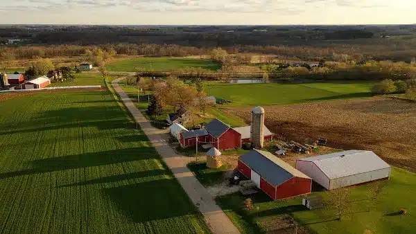

Seja você um morador da cidade ou do campo, este é o lugar ideal para encontrar informações relevantes sobre ambos os ambientes. Nós nos dedicamos a fornecer um panorama abrangente das características, oportunidades e desafios de nossa região, unindo o melhor dos dois mundos.

A zona rural
A zona rural é de fundamental importância para nossas vidas, pois nela são desenvolvidas as atividades agropecuárias, como o cultivo de vários alimentos como o arroz, feijão, frutas, legumes etc. e a criação de animais (bois, vacas, porcos, entre outros).
A zona urbana:
As zonas urbanas são áreas muito dinâmicas economicamente, sendo nelas onde se realizam a produção industrial, o comércio e a prestação de serviços. Por conta dessas características, há uma série de vantagens na zona urbana.